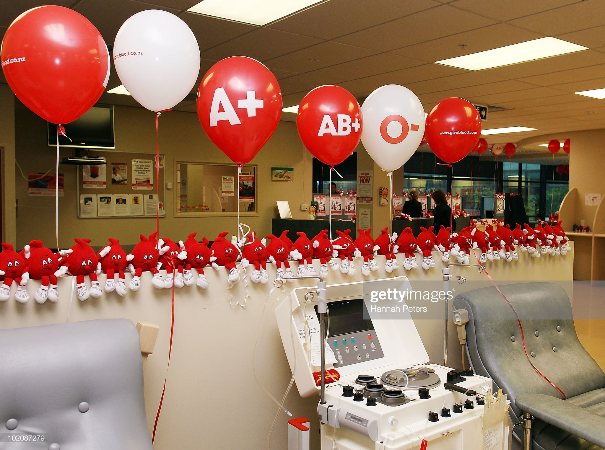
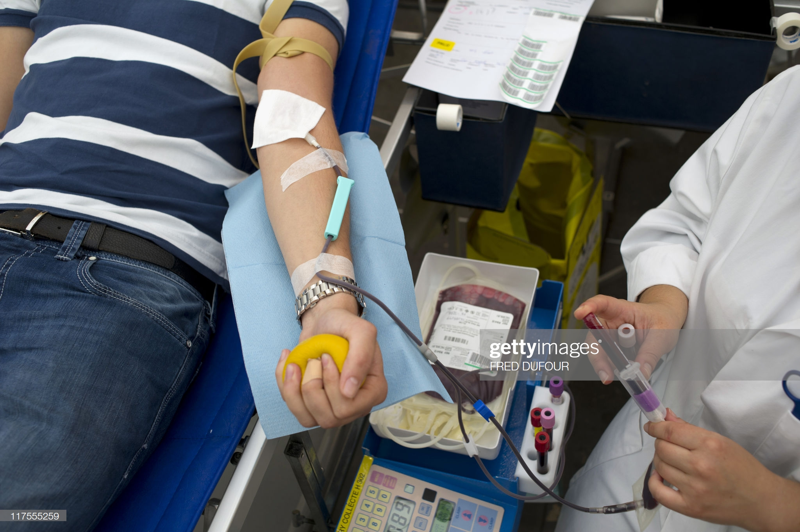
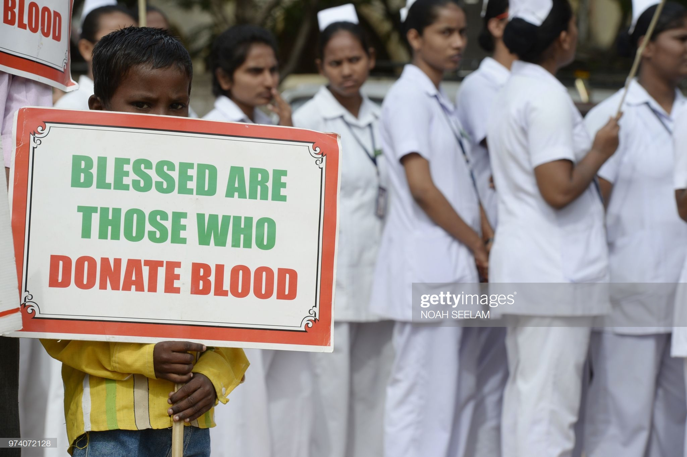
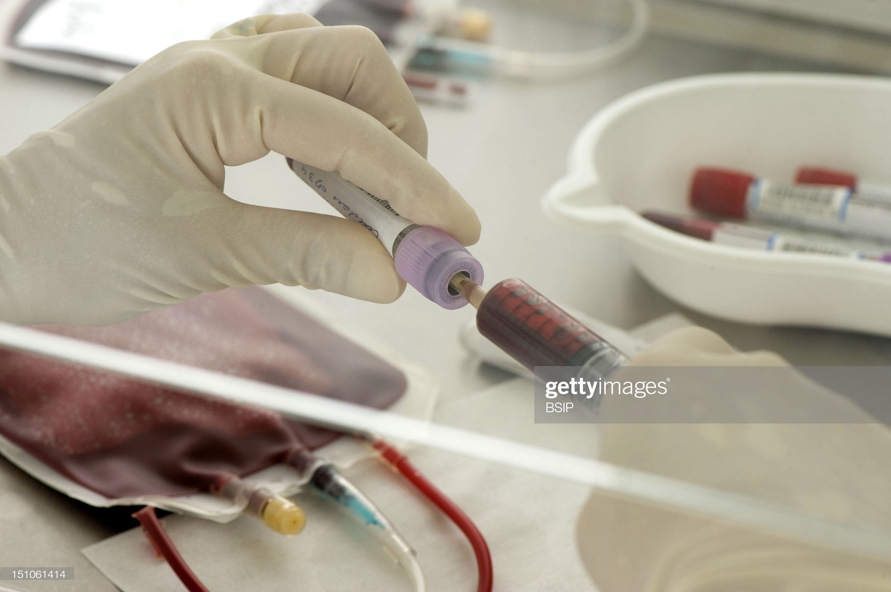

Every year, on 14 June, countries around the world celebrate World Blood Donor Day (WBDD). The event serves to raise awareness of the need for safe blood and blood products and to thank blood donors for their life-saving gifts of blood.
Blood is an important resource, both for planned treatments and urgent interventions. It can help patients suffering from life-threatening conditions live longer and with a higher quality of life, and supports complex medical and surgical procedures. Blood is also vital for treating the wounded during emergencies of all kinds (natural disasters, accidents, armed conflicts, etc.) and has an essential, life-saving role in maternal and perinatal care.
A blood service that gives patients access to safe blood and blood products in sufficient quantity is a key component of an effective health system. Ensuring safe and sufficient blood supplies requires the development of a nationally coordinated blood transfusion service based on voluntary non-remunerated blood donations. However, in many countries, blood services face the challenge of making sufficient blood available, while also ensuring its quality and safety.
|  |  |
|---|---|
|  |  |